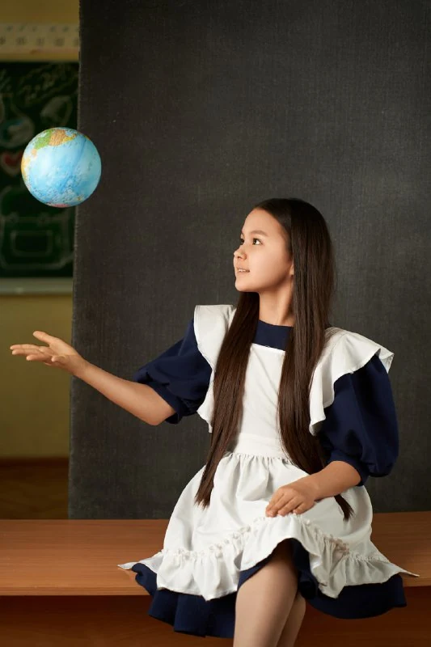
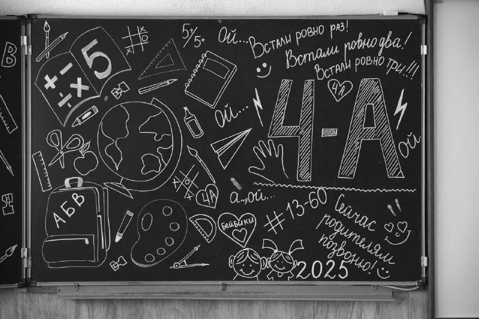
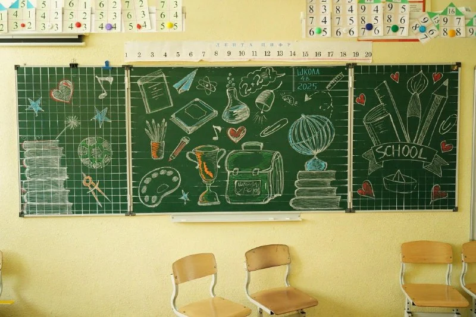
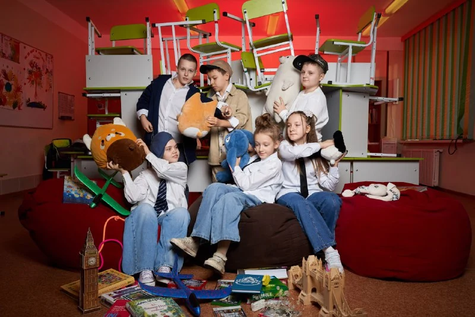
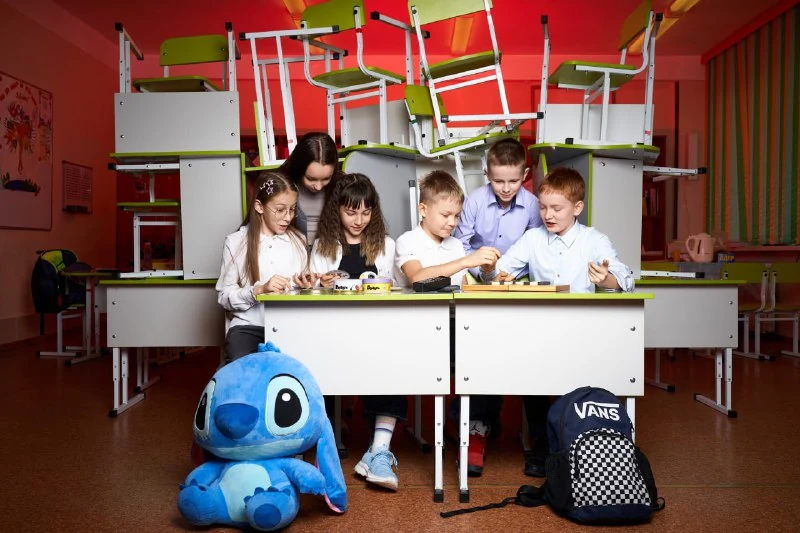
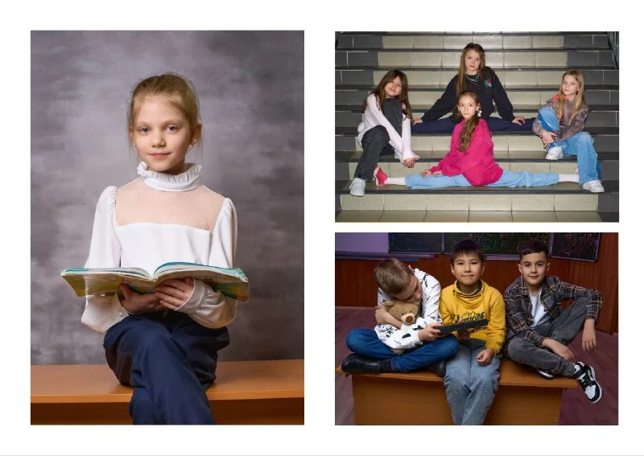
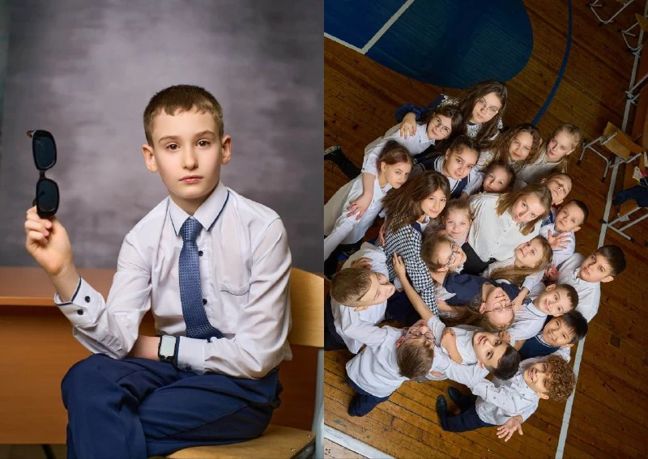

Имбуля
Пишем свою историю
Памятка для семьи и человека, который помогает всему классу.
Две съёмки, пять разворотов Классические портреты снимаем на одной площадке для всего класса, креативные — на другой.

Выберите свою роль, чтобы видеть подходящие пункты чек-листа.
Отметки памятки хранятся только в этом браузере. Это не отправка фотографу.
Начнём с общего плана
Заказчик помогает организовать класс. Каждая семья готовит ребёнка и выбирает его фотографии.
У Имбули два съёмочных дня. Сначала сохраняем школьную классику, затем снимаем свободные образы и друзей. Классические портреты снимаем на одной площадке для всего класса, креативные — на другой. Так класс меньше перемещается. На съёмки отводится до 7 часов. Даты, места и время на каждый день согласуем с фотографом заранее.
Что делает заказчик, а что — семья?
Заказчик или организатор согласует расписание и помещения, собирает компании, следит за очередью и временем. Пожелания каждой семьи не должны отнимать съёмку у остальных.
Родитель готовит одежду и реквизит, сообщает важные детали, выбирает личные кадры и проверяет свой макет. Ребёнок участвует в выборе вместе со взрослым.
Фотограф помогает развить идеи, готовит площадку и свет, снимает и ведёт дальнейшую работу с фотографиями.
Школа, класс и классика
Общая фотография и школьные портреты. Все знают очередь, взрослые помогают с деталями.
На время портретов нужны два кабинета. В одном снимаем, во втором дети ждут и готовятся. Ответственный приглашает детей на портреты по очереди.
Рекомендуемый порядок: общая → компании или фотобудка, если запланированы → остальные кадры всем классом → портреты. Когда общая часть снята, после личного портрета фотограф сможет отпускать готовых по одному.
Школьная форма и личные детали
Обычно это школьная форма или заранее согласованные цвета. Лучше договориться всем классом до съёмки. Перед кадром взрослый помогает поправить воротник, причёску и проверить пожелания семьи.
Награды, книга или другой важный предмет могут дополнить портрет. Если нужен особый реквизит, обсудите его заранее.
Если хотим расписать доску
Сначала уточните, какая доска в кабинете. Для подходящей поверхности можно подготовить меловые маркеры; белые надписи хорошо читаются. Электронную доску маркерами не расписываем — решение обсудим с фотографом.


Теперь — про самого ребёнка
Свободная одежда, увлечения, любимые вещи и фотографии с друзьями. Это другой образ, а не повтор школьного портрета.
Во второй день тоже нужны два кабинета. Один для портретов, второй для ожидания, переодевания и подготовки. Ответственный зовёт детей на съёмку по очереди.
Можно прийти в спортивной форме, танцевальном костюме или просто в одежде, в которой ребёнку нравится быть собой. Не обязательно придумывать сложное хобби или сюжет.
Креативные личные портреты снимаем на общей для детей площадке. Меняются образы и реквизит, а не место и схема света для каждого ребёнка.
Заранее решите, где снимать компании. Если используете площадку для портретов, приглашайте каждую компанию отдельно по очереди.
Как устроена фотобудка?
Фотограф подготавливает площадку, свет и объясняет, как снимать. Дети придумывают жесты, эмоции и взаимодействуют друг с другом; фотограф при необходимости помогает. Это возможность получить живые кадры с друзьями.
Постановочная компания тоже возможна: согласуем одежду, реквизит и подходящее место. Общий стиль помогает, но одинаковая одежда не обязательна.


Можно ещё на лестнице, во дворе или с дрона?
Да, дополнительные идеи можно согласовать в пределах отведённого времени. Можно обсудить кадр всем классом на лестнице, во дворе школы или с дрона. Для двора учитываем погоду и одежду, а возможность кадра с дрона уточняем заранее.
Ответственный помогает удерживать общий план. Просьба одной семьи «сфотографировать ещё» не должна отнимать время других детей. Сложную идею и реквизит обсуждаем до дня съёмки. Для съёмки компаний можно выбрать несколько мест. Заложите время на переходы.
Нужно ли всем ждать весь день?
Во второй день семьи приходят по согласованным блокам. Сначала снимаем компанию, затем личные образы. Уходить можно после своей программы и согласования с фотографом. Не ставьте другие дела вплотную: подготовка, свет и переодевание могут занять больше времени.
Выбираем вместе с ребёнком
Меньше одинаковых дублей, больше разных моментов. В книге фотографию нельзя увеличить пальцами, как на телефоне.
- Откройте свой проект и подборку фотографий в личном кабинете.
- Начните с двух кадров первого личного разворота: классика и креативный образ.
- Для свободных разворотов выберите разные фотографии ребёнка и компаний. Похожие повороты головы лучше оставить в запасе.
- Сохраните свой выбор. Отдельно проверьте, что готовность действительно подтверждена в кабинете: отметки в этой памятке никуда не отправляются.
Сколько фотографий выбирать?
В переписке нет обязательного количества кадров для всех семей. Ориентир — свободное место и читаемые лица. Один большой кадр часто работает лучше, чем много одинаковых маленьких.
Крупный портрет можно сделать меньше; компанию и общую фотографию лучше показать крупно. Сначала выберите главное, затем добавьте дополнительные кадры, если они помогают истории.
Почему на фото водяные знаки?
Это предварительные кадры для выбора, ещё до окончательной ретуши и выпуска альбома. Они помогают выбрать выражение лица и композицию. Не стоит считать такой просмотр финальными фотофайлами или распространять ссылку на чужую подборку.
Пять разворотов вашей Имбули
Обложка отдельно. Внутри — три личных разворота и два общих.
- Первый личный: классика + креативДва образа одного ребёнка: школьный и свободный.
- Виньетка всего классаЦелый разворот, общий для всех. Проверяем фамилии, имена и выбранные портреты.
- Общая фотографияОдин и тот же согласованный снимок на целый разворот для всех.
- Свободный разворотСемья выбирает личные фотографии, друзей и расположение.
- Ещё один свободный разворотПродолжение вашей истории: крупный любимый кадр или несколько разных.
В списке показан понятный порядок сборки. Окончательное расположение страниц сверяем по готовому макету.
Обложка: ребёнок или дизайнерская
Тип обложки выбирается одним решением для всего класса.
С фотографией ребёнка: каждая семья выбирает подходящий кадр своего ребёнка для личной обложки.
Дизайнерская: класс обсуждает общее оформление с фотографом. Готовый вариант проверяете перед печатью. Старый пример книги не обязывает весь класс повторять именно эту обложку.
Как сочетать большие и маленькие фото?
Начните с главного кадра. Его можно отдать на целую страницу или разворот, а рядом собрать несколько дополнительных. В компаниях люди изначально мельче — им нужно больше места.


Сначала смотрим, потом печатаем
Выбор → ретушь → подготовка макета → проверка семьёй → замечания и исправления → подтверждение.
На этом этапе важно смотреть именно актуальную версию макета. Сохранение фотографий и отметки в памятке не заменяют согласование печати.
Как написать понятное замечание?
Укажите разворот, фотографию и что нужно исправить. Например: «На свободном развороте справа замените второй кадр на выбранный запасной» или «В виньетке ошибка в фамилии».
Пожелание к ретуши, исправление имени и замена фотографии — разные просьбы. Чем точнее описано замечание, тем легче проверить результат.
Забираем готовую историю
Печать начинается после согласования готового макета и выполнения условий вашего заказа.
Фотограф сообщит о готовности, доставке и выдаче. Конкретные сроки и оплата — по вашему договору, а не по чужому примеру из переписки.
Нужно ли сохранять электронные фотографии?
Да. Когда готовые файлы переданы, скачайте их и сохраните свою копию. Срок доступа к ссылке и состав электронных файлов уточняйте по своему заказу: просмотр для отбора и готовые файлы — разные этапы.
Чек-лист — ваша памятка. Выбор кадров, замечания и подтверждение макета сохраняются отдельно в личном кабинете.